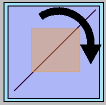
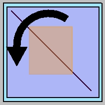
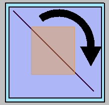
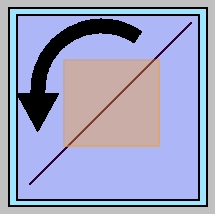

Determine Rotate Regions
When a user clicks in the outside region, the mirror cell should rotate either clockwise or counter-clockwise 90°. We will want to show a "hint" using our new curved arrows.
 Again, the orientation of the mirror makes no difference. The deciding factor for which way we will rotate is the position of the cursor as it hovers over the outside click region.
 We can take the easy solution here and imagine the region is divided into an upper and lower half. When the user clicks on the upper half we'll go clockwise and on the lower half we'll go counter-clockwise.